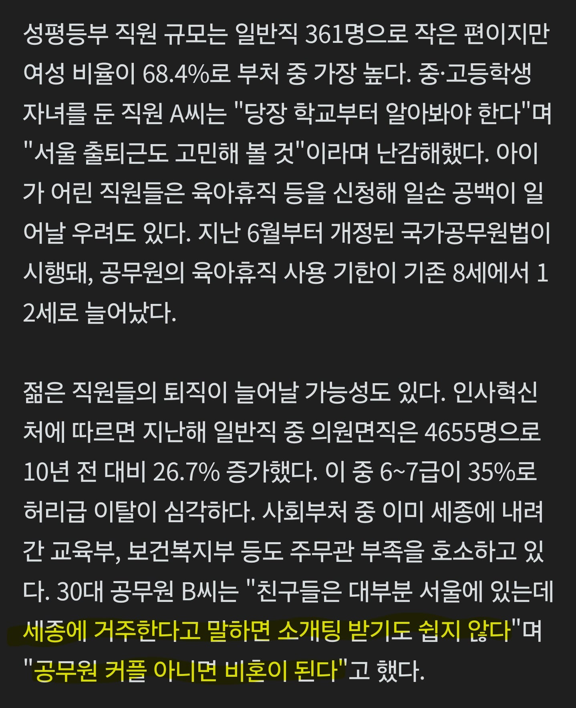

185 · 8 · 11 시간 전 · 원문

수집 당시 댓글 8개
초고수 · 5 시간 전
아 예~
vitadolce · 5 시간 전
주변에 정말 암것도 없는 오지도 아니고 세종정도면 절하고 들어가겠다는 사람 연병장 뺑뺑이로 차고 넘침. 연병장 하나로는 부족할걸?
구황작물 · 3 시간 전
어쩌라는
흙수저프렌즈 · 2 시간 전
저 자리에 청년주택 초고층으로 지어서 티배깅 갈기고 싶다
버팔로1122 · 2 시간 전
그래서 뭐
오타니 · 1 시간 전
세종도 사람 사는 곳인데 왜 난리야
염전 아니잖아
북북춤 · 1 시간 전
끌려왔어??
년묶은인삼주 · 방금 전
그럼 퇴사해~
아 예~